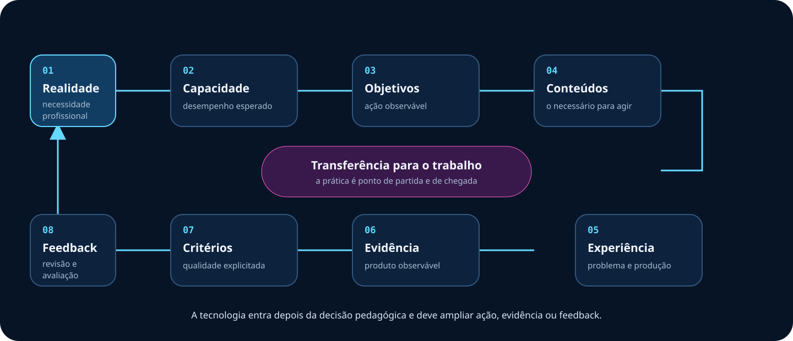

Prática profissional
Problemas autênticos orientam capacidades, objetivos e decisões.
Formação de formadores • TJRS
Um ambiente para organizar encontros, experiências de aprendizagem, evidências e recursos tecnológicos. A prática profissional é o ponto de partida e de chegada.
Visão geral
O portal organiza o curso. O Dia 1 também funciona como material instrucional, com perguntas, exemplos e retomadas que podem ser estudados sem a fala do formador.
Problemas autênticos orientam capacidades, objetivos e decisões.
A aprendizagem aparece em decisões, produtos, argumentos e revisões.
O formador diagnostica, problematiza, acompanha, devolve e sistematiza.
Cada experiência termina com um próximo passo aplicável ao trabalho.

Percurso do curso
Somente conteúdos validados aparecem como disponíveis. Os próximos dias permanecem sinalizados sem conteúdo inventado.
Dia 1
Diagnóstico e problematização com Mentimeter; Gemini Notebook pelo ciclo Fontes, Prompts e Artefatos, com verificação, revisão e autoria.
Dia 2
Apresentação estruturada pelos capítulos do guia, com Teams, Forms, Whiteboard, Loop, SharePoint, sequência integrada, avaliação e checklist.
Próximos dias
Novos encontros serão incorporados quando tema, objetivos, atividades e evidências estiverem definidos e validados.
Nenhum objetivo, ferramenta ou material foi presumido.
Recursos tecnológicos
O recurso só entra quando amplia uma ação relevante, torna uma evidência visível ou melhora o feedback.
Usar tecnologia quando o ganho pedagógico superar a carga, o risco e a complexidade.Ver fichas dos recursos
Orientações
Escolha o dia e acesse a camada pedagógica antes da apresentação.
Use setas, espaço, swipe, visão geral, notas e tela cheia.
O temporizador apoia as atividades e pode ser destacado em uma janela própria.
Preserve o objetivo mesmo quando licença, rede ou ferramenta falhar.